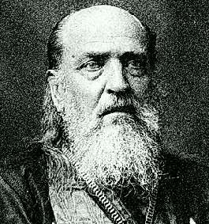
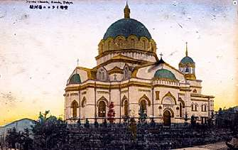

Борис Акунин
Мой календарь
Всегда про это думаю, когда вспоминаю Николая Японского, день памяти которого приходится на 16 февраля.
Иван Дмитриевич Касаткин (1836–1912) был русским священником, жизнь которого оказалась прочно связана с Японией.
По окончании академии он выбрал путь черного духовенства (Николай - монашеское имя) и отправился миссионером в только что открывшуюся для иностранцев дальневосточную страну. Пробыл там до самой кончины, оставил по себе добрую память. Одно из самых красивых архитектурных сооружений в Токио - Никорайдо, православный храм Николая, возведенный под руководством Касаткина.
Самый драматичный период жизни Ивана Дмитриевича пришелся на 1904–1905 г.г., когда две его родины, природная и избранная, вели между собой войну.
Японская паства, естественно, была за свою страну и молилась православному богу о ниспослании победы его величеству микадо. Священник не мог предать своих духовных чад, но не мог предать и свое отечество. Трудно представить себе душевный раздрай хуже этого.
Как поступил отец Николай?
Прихожанам он сказал, чтобы они молились согласно своим убеждениям: «буду счастлив видеть, что вы исполняете долг в отношении к своей стране», сам же он не может молиться о победе Японии над Россией. И до конца войны не проводил богослужений, занимался «Обществом духовного утешения военнопленных» (в Японию доставили 80 тысяч солдат).
Японцы, уважающие верность превыше всех качеств, к пастырю претензий, кажется, не имели. Последние годы архиепископ Токийский и всея Японии Николай прожил мирно.
Россияне, испытавшие тот же внутренний конфликт, знайте: у вас есть святой покровитель (Николай в 1970 году он был канонизирован).